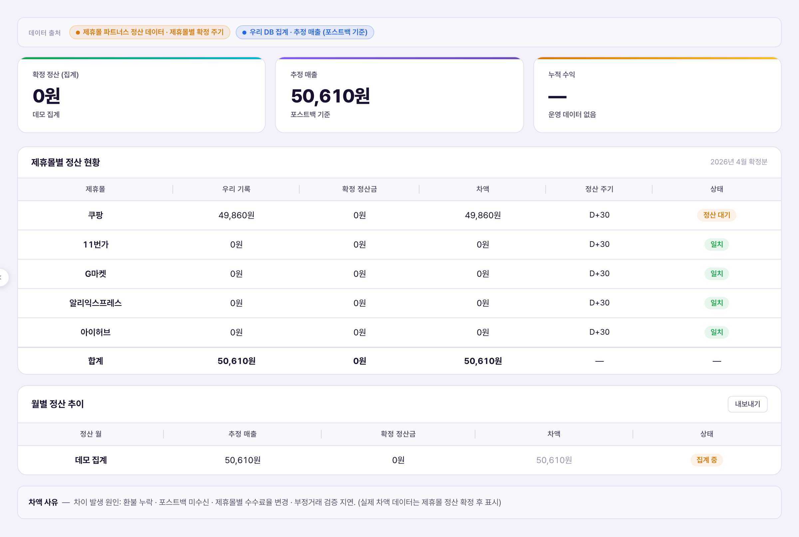

정산 내역 = "우리가 벌었다고 추정한 돈"과 "제휴몰이 실제로 확정해서 입금하기로 한 돈"을 대조하는 화면. 목적은 하나 — 두 숫자가 안 맞을 때(차액) 그 이유를 잡아내서 못 받은 돈을 쫓아가는 것이다.Lịch sử quyết toán = màn hình đối chiếu "số tiền chúng ta ước tính đã kiếm được" với "số tiền đối tác đã chốt và cam kết chuyển thực tế". Mục đích chỉ một — khi hai con số lệch nhau (chênh lệch), phát hiện lý do để truy đòi khoản tiền chưa nhận được.
용어부터 정리하면 — "우리 기록"은 회원이 제휴몰 링크로 구매하는 순간 제휴몰이 우리 서버로 보내는 신호(포스트백)를 받아 즉시 추정 계산한 값이다. 반면 "확정 정산금"은 제휴몰이 자기 회계 마감을 끝내고 실제로 입금을 확정한 값이며, 이건 제휴몰마다 정해진 주기(이 페이지 기준 전 제휴몰 D+30, 즉 구매일로부터 30일 후)가 지나야 나온다. 차액 = 우리 기록 − 확정 정산금이고, 제휴몰 정산이 정상적으로 끝나면 이 값은 0으로 수렴해야 한다. (참고로 "GMV"라는 말을 종종 쓰는데, 이건 회원이 결제한 상품 총액을 뜻하는 업계 용어다 — 여기 표의 금액은 GMV가 아니라 그 중 우리 몫인 제휴 수수료(매출)다.)Trước hết là thuật ngữ — "Ghi nhận của chúng ta" là giá trị được tính ước tính ngay lập tức khi hệ thống nhận tín hiệu (postback) mà đối tác gửi về server của mình vào thời điểm khách mua qua link. Ngược lại, "Số tiền quyết toán đã chốt" là giá trị mà đối tác xác nhận chuyển tiền thực tế sau khi họ hoàn tất khóa sổ kế toán riêng, và giá trị này chỉ xuất hiện sau một chu kỳ cố định theo từng đối tác (trong trang này tất cả đối tác đều là D+30, tức 30 ngày sau ngày mua). Chênh lệch = Ghi nhận của chúng ta − Số tiền quyết toán đã chốt, và nếu quyết toán của đối tác diễn ra bình thường thì giá trị này phải tiến dần về 0. (Ngoài ra, thuật ngữ "GMV" hay được nhắc tới — đây là tổng giá trị sản phẩm mà khách đã thanh toán. Số tiền trong các bảng ở trang này không phải GMV mà là hoa hồng liên kết (doanh thu) — phần thuộc về chúng ta trong đó.)

| 요소Thành phần | 의미Ý nghĩa | 바꾸면 생기는 일Điều gì xảy ra khi thay đổi |
|---|---|---|
| 데이터 출처 배너Banner nguồn dữ liệu | 두 값이 서로 다른 곳에서 온다는 걸 상기시킴 — 제휴몰 파트너스 정산 데이터(제휴몰별 확정 주기) vs 우리 DB 집계(포스트백 기준 추정)Nhắc rằng hai giá trị đến từ hai nguồn khác nhau — dữ liệu quyết toán Partners của đối tác (theo chu kỳ chốt riêng) vs tổng hợp DB của chúng ta (ước tính theo postback) | 정보 표시용, 편집 대상 아님Chỉ mang tính hiển thị thông tin, không phải đối tượng chỉnh sửa |
| 요약 카드 3종3 thẻ tóm tắt 확정 정산(집계) · 추정 매출 · 누적 수익Quyết toán đã chốt (tổng hợp) · Doanh thu ước tính · Lợi nhuận lũy kế | 전체 그림을 숫자 3개로 압축 — 지금까지 실제로 확정된 돈, 앞으로 확정될 것으로 보이는 돈, 올해 누적으로 남은 수익Nén toàn bộ bức tranh thành 3 con số — tiền đã thực sự chốt đến hiện tại, tiền dự kiến sẽ chốt sắp tới, lợi nhuận lũy kế còn lại trong năm | 클릭해도 반응 없음 — 조회 전용 요약Nhấp vào không có phản ứng — chỉ là tóm tắt để xem |
| 제휴몰별 정산 현황 표Bảng tình trạng quyết toán theo đối tác | 이번 확정분(현재 2026년 4월분)을 제휴몰 단위로 우리 기록 vs 확정 정산금 vs 차액으로 대조Đối chiếu đợt chốt hiện tại (hiện là đợt tháng 4/2026) theo từng đối tác: ghi nhận của chúng ta vs số tiền quyết toán đã chốt vs chênh lệch | 상태 배지("정산 대기"/"일치"/"검증 중" 등)는 차액 값에 따라 시스템이 자동 계산 — 운영자가 직접 바꾸는 값 아님Nhãn trạng thái ("Chờ quyết toán"/"Khớp"/"Đang xác minh"...) do hệ thống tự tính theo giá trị chênh lệch — không phải giá trị vận hành viên chỉnh tay |
| 월별 정산 추이 표 + 내보내기Bảng xu hướng quyết toán theo tháng + Xuất file | 여러 달의 추정 매출·확정 정산금·차액 흐름을 한 표로 비교So sánh diễn biến doanh thu ước tính·số tiền quyết toán đã chốt·chênh lệch qua nhiều tháng trong một bảng | "내보내기"는 CSV 다운로드 버튼 — 데모에선 안내 문구만 뜨고 실제 파일 생성은 안 됨"Xuất file" là nút tải CSV — ở bản demo chỉ hiện thông báo, chưa thực sự tạo file |
| 차액 사유 노트Ghi chú lý do chênh lệch | 차이가 왜 나는지 대표 사유를 텍스트로 설명 — 환불 누락 · 포스트백 미수신 · 제휴몰별 수수료율 변경 · 부정거래 검증 지연Giải thích bằng văn bản các lý do chính gây chênh lệch — thiếu xử lý hoàn tiền · chưa nhận postback · thay đổi tỷ lệ hoa hồng theo đối tác · chậm xác minh giao dịch gian lận | 참고용 텍스트일 뿐 수정 UI 없음 — 실제 원인 확인은 제휴몰 쪽 자료를 별도로 대조해야 함Chỉ là văn bản tham khảo, không có UI chỉnh sửa — muốn xác định nguyên nhân thực sự phải đối chiếu riêng với dữ liệu phía đối tác |
지금 화면에 뜬 5개 제휴몰이 전부 "우리 기록"만 있고 확정 정산금은 전부 0원인 이유가 여기 있다 — 이 데모는 새로 시작된 데모라 아직 D+30 확정일에 도달한 제휴몰이 하나도 없다. 그래서 "일치"(0=0)와 "정산 대기"만 보이고, 실제 불일치(예: 확정 정산금이 우리 기록보다 적게 들어와 마이너스 차액이 뜨는 상황)는 이 데모 시점 화면엔 아직 안 나타난다. 실제 운영에서 D+30이 지나면 쿠팡 행의 확정 정산금이 채워지고, 그 값이 우리 기록(49,860원)과 정확히 같으면 "일치"로, 다르면 그 차액만큼 배지가 "검증 중" 등으로 바뀐다.Đó là lý do vì sao cả 5 đối tác đang hiển thị chỉ có "Ghi nhận của chúng ta" còn số tiền quyết toán đã chốt đều là 0đ — vì đây là bản demo mới khởi tạo nên chưa có đối tác nào đạt đến ngày chốt D+30 cả. Vì vậy chỉ thấy "Khớp" (0=0) và "Chờ quyết toán", còn tình huống lệch thực sự (ví dụ số tiền quyết toán về ít hơn ghi nhận của chúng ta, ra chênh lệch âm) chưa xuất hiện ở thời điểm demo này. Trong vận hành thực tế, khi qua D+30, dòng Coupang sẽ được điền số tiền quyết toán đã chốt — nếu đúng bằng ghi nhận của chúng ta (49.860đ) thì thành "Khớp", nếu khác thì nhãn sẽ đổi thành "Đang xác minh" theo đúng mức chênh lệch đó.
| 상황Tình huống | 운영자가 하는 일Việc Vận hành viên làm | 결과Kết quả |
|---|---|---|
| D+30 도래, 정상 입금Đến D+30, chuyển tiền bình thường 쿠팡이 49,860원 그대로 확정 통보Coupang thông báo chốt đúng 49.860đ | 확정 정산금 필드에 49,860원 입력(또는 API 연동 시 자동 반영)Nhập 49.860đ vào trường số tiền đã chốt (hoặc tự động nếu đã nối API) | 차액 0원 →Chênh lệch 0đ → 일치Khớp |
| 차액 발생 — 환불 누락Phát sinh chênh lệch — thiếu xử lý hoàn tiền 제휴몰은 환불분을 차감했는데 우리 시스템엔 미반영Đối tác đã trừ phần hoàn tiền nhưng hệ thống mình chưa cập nhật | 차액 사유 노트로 원인 확인 → 포스트백 재처리 요청 → 우리 기록 쪽 환불 처리 반영Xác định nguyên nhân qua ghi chú lý do chênh lệch → yêu cầu xử lý lại postback → cập nhật hoàn tiền vào ghi nhận của chúng ta | 다음 집계에서 차액 축소·해소 확인Xác nhận chênh lệch giảm·biến mất ở lần tổng hợp tiếp theo |
| 차액 지속 — 미수금 의심Chênh lệch kéo dài — nghi ngờ khoản chưa thu 2개월 이상 같은 제휴몰에서 마이너스 차액 반복Chênh lệch âm lặp lại ở cùng đối tác từ 2 tháng trở lên | 제휴몰 정산 담당에 소명 요청 · 수수료율 변경 여부 확인 · 필요 시 이의 제기Yêu cầu đối tác giải trình · kiểm tra có thay đổi tỷ lệ hoa hồng không · khiếu nại nếu cần | 미수금 회수 협상 or 우리 쪽 계산 오류 수정Đàm phán thu hồi khoản chưa thu, hoặc sửa lỗi tính toán phía mình |
이 화면은 매출 내역(건별 발생 로그)이나 수익 분석(전체 손익 집계)과 다른 층위의 문서다. 저 두 화면이 "우리가 얼마 벌었는지"를 보여준다면, 이 화면은 그 숫자가 제휴몰의 실제 입금과 맞는지 대조하는 감사(audit) 화면이다 — 두 화면의 "그라운드 트루스(진짜 맞는지 검증하는 기준)" 역할을 한다.Trang này ở một tầng tài liệu khác so với Lịch sử doanh thu (log phát sinh theo từng giao dịch) hay Phân tích lợi nhuận (tổng hợp lãi lỗ toàn bộ). Nếu hai trang đó cho biết "chúng ta đã kiếm được bao nhiêu", thì trang này là màn hình kiểm toán (audit) đối chiếu xem con số đó có khớp với tiền đối tác thực sự chuyển hay không — đóng vai trò "ground truth" (chuẩn để xác minh đúng-sai) cho cả hai trang kia.
user_id로만 연결해서 보관하므로, 회원이 탈퇴해도 이 정산 기록 자체는 삭제되지 않는다. 즉 이 화면의 데이터는 "필요 없어지면 지워도 되는 운영 로그"가 아니라 법정 보존 대상 원장(ledger)이다 — 삭제·수정 기능을 함부로 넣으면 안 되는 이유가 여기 있다.Theo Luật Thương mại điện tử, dữ liệu quyết toán thuộc diện bắt buộc lưu trữ nguyên vẹn trong 5 năm. Dữ liệu được lưu không kèm thông tin định danh cá nhân (PII), chỉ liên kết qua user_id, nên kể cả khi thành viên xóa tài khoản thì bản thân bản ghi quyết toán này vẫn không bị xóa. Nói cách khác, dữ liệu ở màn hình này không phải "log vận hành có thể xóa khi không cần nữa" mà là sổ cái (ledger) thuộc diện lưu trữ bắt buộc theo luật — đây là lý do không được tùy tiện thêm chức năng xóa·sửa vào đây.참고로 CMS 사이드바에서 이 메뉴("정산 내역")의 스펙 확인 배지는 현재 미확인 상태다 — 이 페이지의 설명은 실제 화면 캡처와 정책서 근거로 작성됐지만, 김반장님의 최종 확정은 아직 남아 있다.Ngoài ra, nhãn xác nhận spec cho mục menu này ("Lịch sử quyết toán") ở sidebar CMS hiện đang ở trạng thái chưa xác nhận — nội dung trang này được viết dựa trên ảnh chụp màn hình thực tế và căn cứ tài liệu chính sách, nhưng việc chốt cuối cùng của Mr Mark vẫn còn để ngỏ.